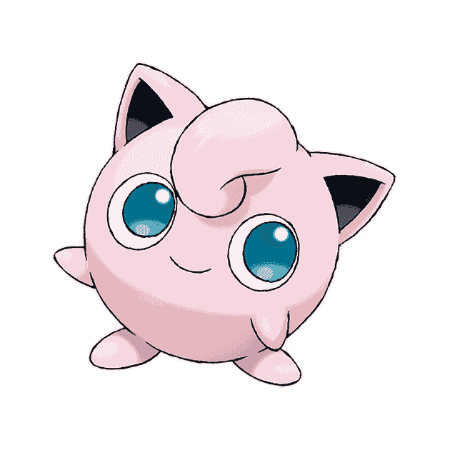

吉利蛋还没有收到爱心哦
{{ game.名称 }}
🔍
×
{{ tag }}
{{ tag }}
×
{{ potentialGameCount }}
{{ sortOrderLabel }} 
{{ game.名称 }}
people
{{ game.人数 }}
timer
{{ game.时长 }}
scale
{{ game.难度 }}
{{ getTagName(tag) }}
{{ tag }}
想玩什么？让可达鸭帮你找找！
呜呜，找不到鸭...